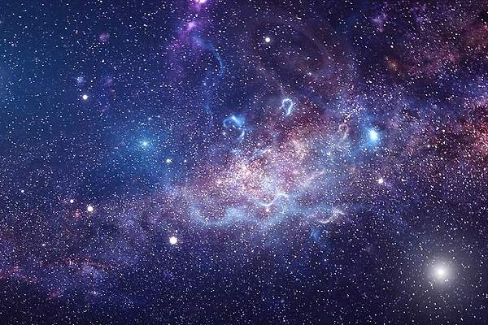

¿Qué es el Universo?
El Universo es todo lo que podemos tocar, sentir, percibir, medir o detectar. Abarca los cosas vivas, los planetas, las estrellas; las galaxias, las nubes de polvo, la luz e incluso el tiempo. ... El Universo contiene miles de millones de galaxias, cada una con millones o miles de millones de estrellas
.

El universo está formado por el conjunto de todos los astros que existen y el espacio que hay entre ellos. Hay dos tipos: ➔ Astros luminosos: emiten luz y calor, por ejemplo, las estrellas. Las nebulosas son enormes nubes de gas y polvo; a partir de ellas se forman las estrellas.
La teoría que mejor describe el origen del Universo es la del “Big Bang”. En la propuesta el Universo completo estaba concentrado en un mismo punto, a partir del cual empezó a expandirse, desde las partículas elementales en los primeros milisegundos, hasta las galaxias que se pueden observar hoy en día.